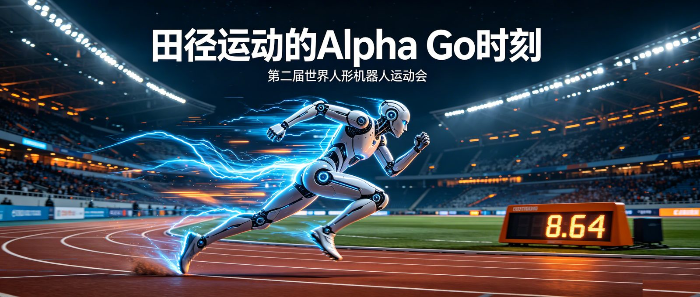

刘慈欣说，“未来像盛夏的大雨，在我们还不及撑开伞时就扑面而来。”
8月26日晚上，国家速滑馆内，一台人形机器人以8.64秒百米冲线！
这比博尔特保持的人类纪录，快了近1秒！（9.58秒）
要知道，人类运动员提升0.1秒，都难如登天。
我们迎来了，田径运动的Alpha Go时刻。
这就是第二届人形机器人运动会。
赛场上，机器人们跑步、跳高、踢球，观赏性越来越接近人类奥运会了。
回顾这次运动会，有哪些热闹，和背后的深刻行业变革？
对咱们普通吃瓜群众，机器人距离走进家里伺候我们，还有多远？
一百米短跑，8.64秒，比人类记录快1秒！
立定跳高，3.4米，比人类记录高了1米多！
更可怕的是，去年这个项目的冠军才95厘米。
一年，成绩翻了三倍！
1500米，2分21秒，比人类记录快了整整一分钟！
跑跳，也达到了7.97米！
离人类记录也不远了，8.95米。
这几项成绩，都来自天工的机器人。
毫无疑问，它已经是本次运动会的“超人”选手。
除了因为超人而出名，今年因为搞笑出名的机器人也不少。
400米小型组冠军，跑起来像动漫里害羞的女孩子。
“喂！你们每天都在给机器人看点什么呀！”
其实工程师介绍，这个姿势不是写好的，是它自己学习出来的。
目的是省力，给肩膀减负，也防止过热。
这届运动会搞笑名场面真不少，观赏性这不就来了么。
也许未来机器人运动会的商业价值，将远超奥运会和世界杯。
今年刚上市的宇树，成绩就不够亮眼了。
去年宇树是田径的四金王，而今年百米预赛没出线。
可见行业竞争的激烈。
宇树官方回应称，精力放在量产和交付上，缩减参赛项目。
不过赛场上还是可以看到很多宇树的身影的，因为参赛团队不只是公司。
还有大量的研究所，高校。
所以相同的机器人，背后是不同团队的模型和调试。
最后同一个身体，成绩也可以相差很远。
脑子比体格重要，看来对机器人也是如此。
田径赛场上，体现了机器人在电机、模型、视觉，多方面的能力。
但都很少涉及到手，而人形机器人要真正落地，手是必不可少的。
组委会也考虑到了这点。
所以有比工作能力的场景赛，包括了酒店、家庭、餐厅。
这些项目，才是未来离我们最近的。
离开了田径赛场，机器人的表现，就从梁圣变成梁子了。
赛场上，可以看到机器人身后，有一个戴着VR眼镜，和采集手套的操控员。
本次比赛既可以用操作员，也可以AI全自主。
据估计这次比赛，80%的队伍还是用操控。
这暴露了当前具身智能的核心痛点。
站立、跑跳这些身体大动作的模型训练，已经跑通了。
但理解任务，使用工具，和复杂的场景交互，还差很多。
好在，计分标准是调整过的，遥控参赛分数要乘0.5。
那离开操作员，有多少全自主的机器人，拿到了亮眼的成绩呢？
还真有，灵巧手赛8个项目中，就有4个是全自主夺金，而且都使用同一家公司的机械手！
用勺子称20克粉末，误差在半克内。
用镊子夹黄豆，搭建积木，用电钻拧螺丝。
这些操作，真人来做也要小心翼翼的。
这只手，就是临界点（智元子公司）的OmniHand。
（虽然都是同一只手在干，背后的“脑子”却不一样。粉末称量这一枚，是武汉大学的自研算法拿下的。）
不过，团队也坦言失利的项目。
开瓶盖比赛，训练时能轻松打开盖子。
到了赛场，光线一变，模型就认不出盖子了。
这就是全自主的难度，要脱离受控的实验室环境，面对复杂多变的真实世界。
第二组，场景赛，设定了12个岗位，就像牛马真的去上班。
这里面全自主的比例，就比灵巧手比赛高多了。
可见抓握的精细度，是一个关键壁垒。
全自主情况下，拿奖牌最多的是智元和银河通用。
先看离大众最近的，家政服务岗。
整理客厅、叠衣服、洗晾衣物。
过程中还有突发语音任务，得停下手里的活儿去收快递。
银河通用的机器人，全自主，100%完成率。
什么样，这样的保姆，你想要了么？
然后是流水线上作业，打包入库岗。
把药片放入药盒里，盖好药盒，再整齐的放进箱子内。
智元的精灵G2，同样是全自主完成。
还有日常办公，综合服务岗。
摆桌签、放水瓶、给打印机塞纸、送打印件、碎纸。
这项是千寻智能获得金牌。
但也有一些项目，全自主还跑不通，比如消防救援。
识别危化品、关三种阀门、拎起4.5公斤的灭火器灭火。
12支队伍，甚至只有3支能够完成比赛。
而且全部都是使用的VR遥操。
一个关键原因，可能就是这一项的场地不提前公开。
而其他几项，都有赛前测试的机会。
可见，当前的全自主，还不是任意坏境的全自主。
赛前调试这个环节，不可能在落地时，挨家挨户跑一遍。
而消防环节，就暴露了真正的全自主，其实还没来。
第二届人形机器人运动会，展示了惊人的AI速度！
在跑和跳上，机器人已经超越了我们演化了几百万年的身体。
听着运动场内回荡着跑步的高频电机声。
希望未来我们是惬意的，躺在家里沙发上听见这个声音。
而不是像俄乌的士兵，听见头顶的旋翼声那样绝望。
但从更复杂的项目上，也能看到机器人全面的“超人”还有相当的距离。
要满足更广阔的需求，就要和复杂物理现实交互。
要面对柔软的布料、不规则的物品、多样的工具、变化的环境。
还有超越这之上的，正确地理解意图，并做出长程的任务决策。
这些方面，当下机器人还有很多不足。
这些不足更多的体现在脑子里，也就是模型训练上，而不是机械结构。
多亏这样的运动会，让各家机器人暴露到统一的测试里。
让我们看看，未来家里的打工人，已经离我们越来越近了。